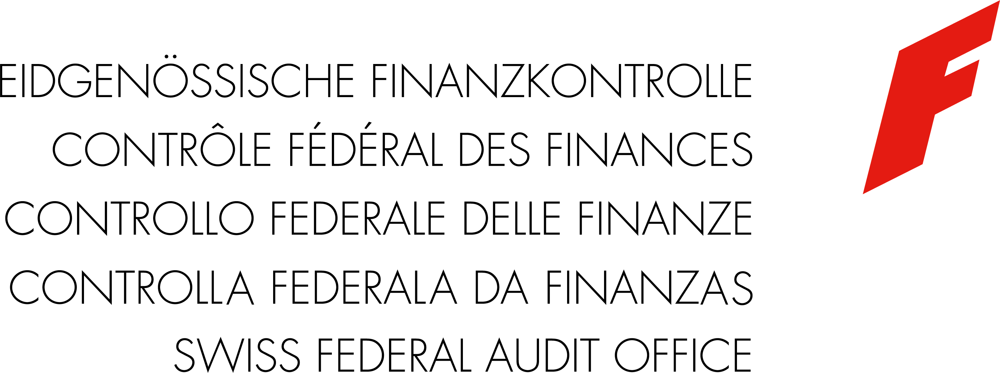
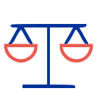
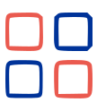

EFK
Ein Versuch.
Programm
01 — Informationssicherheitsgesetz (ISG, SR 128)
Die Kenntnisnahme durch eine unberechtigte Person kann den geschützten Interessen schaden (Funktionsfähigkeit des Bundesrates, der Verwaltung oder der Armee, Strafverfolgung, Sicherheit von Personen, nukleare Sicherheit, Aussen- oder Wirtschaftspolitik, Beziehungen zwischen Bund und Kantonen). Als «intern» gelten auch Informationen, die Rückschlüsse auf vertrauliche oder geheime Inhalte zulassen.
Art. 13 Abs. 1 ISG; Art. 18 ISVDieselben Interessen, aber erheblich geschädigt — z. B. Entscheidungsfähigkeit des Bundesrates oder des Parlaments während mehrerer Tage beeinträchtigt, Sicherheit der Bevölkerung gefährdet, erheblicher aussenpolitischer oder wirtschaftlicher Nachteil.
Art. 13 Abs. 2 ISG; Art. 19 ISVDieselben Interessen schwer geschädigt — z. B. Entscheidungsfähigkeit während Tagen ausser Kraft gesetzt oder während Wochen beeinträchtigt, Preisgabe strategischer Quellen des Nachrichtendienstes, schwerwiegende Folgen (Embargo, Sanktionen) während Wochen.
Art. 13 Abs. 3 ISG; Art. 20 ISVWelche Dokumente der EFK gelten als interne Dokumente?
02 — Datenschutz (DSG, SR 235.1)
Allgemeine Grundsätze für jede Bearbeitung (Art. 6 DSG)
Spezifische Regeln je nach betroffener Person
Besonders schützenswerte Personendaten: Gesundheit, Intimsphäre, rassische oder ethnische Herkunft, religiöse, weltanschauliche, politische oder gewerkschaftliche Ansichten, genetische und biometrische Daten, straf- und verwaltungsrechtliche Verfolgungen und Sanktionen, Massnahmen der sozialen Hilfe.
Profiling — Art. 5 Bst. f/g DSGAutomatisierte Bearbeitung zur Bewertung persönlicher Aspekte — Leistung, wirtschaftliche Situation, Gesundheit, Verhalten, Standort.
Das DSG schützt juristische Personen seit dem 1. September 2023 nicht mehr. Der Bund verpflichtet seine Ämter dennoch zu besonderen Regeln: Daten zu straf- oder verwaltungsrechtlichen Verfolgungen und Sanktionen; Daten zu Berufs-, Geschäfts- oder Fabrikationsgeheimnissen.
Die Bearbeitung dieser Daten in der EFK unterliegt einer besonderen Behandlung (Verhältnismässigkeit, Verschlüsselung, Aufbewahrung).
03 — Prüfungsunterlagen
Vorbereitung und Durchführung der Prüfung
Berichtsphase
04 — Weitere Dokumente